RAG
Retrieval and generation
Zopár základných pojmov
- Chunk: menšia časť textu pre ľahšie vyhľadávanie relevantných dát
- Query/User Prompt: otázka, ktorú zadáva používateľ systému
- System Prompt: inštrukcia systému, ktorá upravuje správanie modelu
- Embedding: numerická reprezentácia chunka na porovnávanie sémantickej podobnosti
- Token: základná jednotka textu spracovaná modelom
- LLM Context Window: maximálny počet tokenov, ktoré model spracuje naraz
Čo je RAG?
RAG využíva aktuálne informácie v systéme, aby poskytoval čo najviac relevantné odpovede. Retrieval získava relevantné informácie z dostupných zdrojov a následne sa generuje odpoveď v LLM na základe poskytnutých chunkov a používateľského promptu.
Spracovanie dát
- pred implementáciou RAG systému potrebujeme pripraviť dáta.
- knižnice na spracovanie dát:
- Unstructured/PyMuPDF: na extrakciu textu a obrázkov
- Camelot: pre extrakciu údajov z tabuliek
- Rozdelenie na chunky, napr:
- podľa regexu
- sémanticky pomocou LangChain
- ukladanie vektorov chunkov do databázy pre efektívne vyhľadávanie, napr.:
- PGVector
- Chroma
- Pinecone
Jednoduchý workflow RAG
Code snippet jednoduchého workflowu
elements = partition_pdf("example.pdf")
# Extract text content
doc_content = ' '.join(element.page_content
for element in elements if element.page_content)
# Semantic chunking and embedding
text_splitter = SemanticChunker(OpenAIEmbeddings())
chunks = text_splitter.split_text(doc_content)
embeddings = text_splitter.embeddings.embed_documents(chunks)
# Insert chunks and embeddings into `pgvector` table
# Retrieve 5 similar chunks by cosine similarity
def retrieve_similar_chunks(query_embedding, top_k=5):
cursor.execute(
"""
SELECT chunk
FROM embeddings_table
ORDER BY embedding <=> %s
LIMIT %s
""",
(query_embedding, top_k)
)
return [row[0] for row in cursor.fetchall()]
# Example embedding of query for retrieval
user_prompt = "What is RAG?"
query_embedding = text_splitter.embeddings.embed_query([user_prompt])
retrieved_chunks = retrieve_similar_chunks(query_embedding)
# Define system prompt and LLM
prompt = ChatPromptTemplate.from_messages(
[
("system", "You are a helpful POC assistant that helps summarize
retrieved content relevant to the user prompt."),
("human", "{retrieved_chunks}"),
("human", "{user_prompt}")
]
)
llm = OpenAI()
# Chain prompt and LLM invocation
chain = prompt | llm
response = chain.invoke(
{
"retrieved_chunks": '\n'.join(retrieved_chunks),
"user_prompt": user_prompt
}
)
Komplexnejší workflow RAG
- Query Transformation: LLM rozkladá zložitý dotaz na sub-queries
- Query Routing: nasmerovanie dotazu k relevantnému zdroju
- Hybrid Retrieval: spojenie semantického vyhľadávania s kľúčovými slovami
- Chunk Re-ranking: najrelevantnejšie chunky sú prioritizované
- Summary Index: rýchle vyhľadávanie v sumároch dokumentov

Nastavenie system promptu
- Vymedzenie dát pre odpovede: model odpovedá iba na základe poskytnutých kontextových údajov, s rozlíšením medzi poskytnutými chunkmi a jeho vlastnými poznatkami
- Špecifikácia vstupu a výstupu: presné definovanie, ako model spracuje dotaz, vrátane štruktúry user query a relevantných chunkov, aby nedošlo k nesprávnemu vyloženiu query
- Štandardizovaný výstup: ak pracujete so štruktúrovanými výstupmi (napr. JSON schema), je dôležité presne nastaviť formát očakávaného výstupu pre konzistentné výsledky
Use cases a limitácie
- Praktické použitia: ideálne pre prostredia, kde sa často vyhľadávajú informácie v dokumentoch – efektívne pri statických dátach, kde môžu byť vopred pripravené prompty
- Obmedzenia úložiska: veľkosť jedného vektoru s dimenziou 1536 je približne 6 KB, čo zvyšuje náročnosť na úložisko
- Výber embedding modelu: správny embedding model je kľúčový, keďže modely sa špecializujú na rôzne prípady použitia
- Prompt engineering: efektivitu môže znížiť nedostatočná znalosť používateľa v správnom formulovaní dotazov, čo si vyžaduje nejaké školenie v oblasti prompt engineeringu